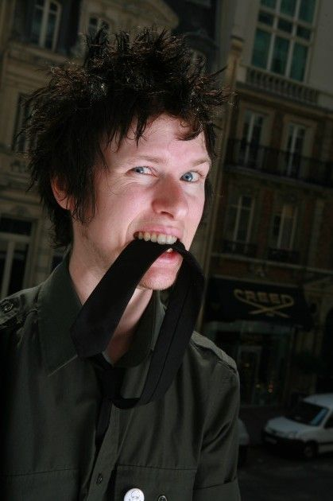

История
Группа Sum 41 была основана Дериком Уибли и Стивом Джозом, которые ранее играли в различных группах. Изначально они назывались Kaspir и были кавер-группой NOFX, но изменили название на Sum 41 для шоу Supernova в 1996 году. Группа была вдохновлена Weezer и Nirvana. Первое живое выступление состоялось 28 сентября 1998 года на шоу Jonopalooza, что совпало с 41 днем их летних каникул. В классическом составе были Уибли и Джоз, а вокалистом и гитаристом — Джон Маршал, который вскоре покинул группу. В 1999 году к ним присоединился басист Коун, заменивший Марка Спиколака, а первым бас-гитаристом был Ричард «Судорога» Рой.
В 1996 году группа встретила продюсера Грега Нори, который предложил Уибли стать вокалистом, что привело к уходу оригинального вокалиста Джона Маршала. Уибли занял место ведущего вокалиста и ритм-гитариста, а Дэйв Бэкш присоединился как ведущий гитарист. В том же году группа выступила на разогреве у Len и начала снимать свои приключения, включая ограбление пиццерии, что было запечатлено на DVD «Introduction to Destruction». В 1998 году они отправили свои видеоклипы и демозаписи звукозаписывающим компаниям, а в 2000 году подписали контракт с Island Records. 27 июня 2000 года вышел их первый EP «Half Hour of Power» с синглом «Makes No Difference», который стал платиновым в Канаде. Музыканты окружили историю создания коллектива романтическим слухом, заявляя, что будущую деятельность они планировали в течение 41 дня — столько длились летние каникулы. Это отразилось на названии группы. Вскоре появился и официальный логотип команды с белым текстом и синим кругом с красной звездой посредине.

Участники группы
Дерик Уибли - вокалист, гитраист и клавишник, Джейсон Маккаслин - бас-гитарист и бэк-вокалист, Том Такер - гитарист, клавишник и бэк-вокалист, Дэйв Бэкш - гитарист и бэк-вокалист, Фрэнк Зуммо - барабанщик и бэк-вокалист

Дерик Уибли
Дерик Джейсон Уибли, известный как «Биззи Ди», родился 21 марта 1980 в Скарборо, Онтарио, Канада. Он является музыкантом и продюсером, а также вокалистом и гитаристом рок-группы Sum 41, которую основал. Группа продала более 30 миллионов альбомов и получила премию Juno Awards, а также была номинирована на «Грэмми» в 2014 году. Уибли начал свою карьеру в 90-х, вдохновленный гранжем, но выбрал панк. Он написал мемуары «Ходячая катастрофа: моя жизнь через рай и ад», выпущенные 8 октября 2024 года. Sum 41 подписала контракт с Island Records в 1999 году и выиграла две премии Juno из семи номинаций. Уибли также работал продюсером и менеджером, сотрудничая с известными артистами, и снялся в фильмах «Грязная любовь» и «Король холма».

Джейсон Маккаслин
Джейсон Пол Маккаслин, известный как «Коун», родился 3 сентября 1980 года в Торонто, Онтарио. Он является бас-гитаристом и бэк-вокалистом канадской панк-рок-группы Sum 41 с 1999 года, заменив Марка Спиколака. Группа подписала контракт с Island Records и выпустила успешные альбомы, включая «All Killer No Filler». Коун также основал сайд-проект The Operation M.D. в 2006 году, работает саунд-продюсером и ведет радиошоу Con 's Cave с 2022 года. Прозвище «Коун» он получил в школе за любовь к мороженому в виде конуса.
Том Такер
Томас Арнольд Такер, известный как «Brown Tom», родился 11 апреля 1974 года в Лэнгли, Канада. Он является канадским музыкантом и соучредителем панк-группы Gob, основанной в 1994 году. С 2006 года Такер выступает в группе Sum 41, став официальным членом в 2009 году. Также он играл на барабанах в группе The McRackins и владеет несколькими музыкальными инструментами, включая аккордеон.


Дэйв Бэкш
Дэйв Низам Бакш, известный как Дэйв Браунсаунд, родился 26 июля 1980 года в Торонто, Канада. Он является ведущим гитаристом и вокалистом хеви-метал/регги группы The Brown Brigade, а также гитаристом и бэк-вокалистом экспериментальной соул-рок-группы Organ Thieves и панк-группы Sum 41. Бакш, имеющий индийские корни, покинул Sum 41 в 2006 году для создания Brown Brigade, но вернулся в группу в 2015 году. Он также играл в дэт-панк-группе Black Cat Attack и в 2019 году стал соучредителем компании Loud & Immortal.

Фрэнк Зуммо
Фрэнк Зуммо — американский музыкант, родившийся 2 июля 1978 года, известный как барабанщик групп Sum 41 и Street Drum Corps, которую он основал. Он также играл в других коллективах, таких как Thenewno2 и Dead By Sunrise. В 2009 году заменил Томми Ли на концертах Mötley Crüe, а в 2011 году стал барабанщиком Julien-K. Присоединившись к Sum 41 в 2015 году, Зуммо записал три альбома: "13 Voices", "Order in Decline" и "Heaven :x: Hell". Он также выступал под псевдонимом Эль Дилдо и заменил барабанщика Electric Callboy на фестивале Good Things в 2024 году.
1. Дебютный альбом - All Killer No Filler; 2. Самый прослушиваемый альбом - All the Good Shit: 14 Solid Gold Hits 2000–2008 (Deluxe Edition); 3. Прощальный альбом - Heaven: x: Hell

<ДОБАВИТЬ ФОТО АЛЬБОМА>
All Killer No Filler
«All Killer No Filler» — дебютный альбом канадской рок-группы Sum 41, выпущенный 8 мая 2001 года. Альбом стал платиновым в США, Канаде и Великобритании, достигнув 13-го места в Billboard 200, а сингл «Fat Lip» возглавил Billboard Rock Tracks. Несмотря на смешанные отзывы при выходе, альбом впоследствии получил признание как классика поп-панка. Вокалист группы Дерик Уибли отметил влияние таких исполнителей, как The Beatles и Green Day, а также альбома «Punk in Drublic» группы NOFX на создание «All Killer No Filler».Альбом "All Killer No Filler" группы Sum 41, выпущенный 8 мая 2001 года, стал самым успешным в их карьере, получив платиновый сертификат и продавшись в США более 1,69 миллиона копий. Главный сингл "Fat Lip" достиг 66 места в Billboard Hot 100 и 1 места в Alternative Songs, а другой сингл "In Too Deep" занял 10 позицию в чарте Alternative Songs. Альбом также попал на 13 место в Billboard 200 и оставался в чарте 49 недель. В 2001 году "Fat Lip" долгое время был номером 1 на MTV. В 2011 году к 10-летию альбома было выпущено специальное издание в Японии.В передаче MTV Cribs барабанщик Стив Джоз рассказал, что большинство песен для альбома All Killer No Filler было написано у него дома. С момента выхода в 2006 году альбом разошелся тиражом 2 миллиона копий в США, стал 3x платиновым в Канаде и продался 3,5 миллиона копий по всему миру. Песня «Summer» появилась в этом альбоме во второй раз, после мини-альбома Half Hour of Power. Изначально группа планировала включать её в каждый альбом, но после выхода All Killer No Filler от этой идеи отказалась.
1. "Introduction to Destruction" (Steve Jocz)
2. "Nothing on My Back" (Whibley, Jocz)
3. "Never Wake Up"
4. "Fat Lip" (Whibley, Jocz, Dave Baksh)
5. "Rhythms"
6. "Motivation"
7. "In Too Deep"
8. "Summer" (re-recorded version)
9. "Handle This" (Whibley, Baksh)
10. "Crazy Amanda Bunkface"
11. "All She's Got" (Whibley, Baksh)
12. "Heart Attack"
13. "Pain for Pleasure" (Whibley, Jocz, Baksh, Jason McCaslin)
14. "Makes No Difference" (originally appears on Half Hour of Power)
15. "What I Believe" (originally appears on Half Hour of Power)
16. "Machine Gun" (originally appears on Half Hour of Power)
17. "T.H.T." (originally appears on Half Hour of Power)
18. "What We're All About" (re-recorded version)
19. "Fat Lip"
20. "Motivation"
21. "Crazy Amanda Bunkface"
22. "All She's Got"
23. "Makes No Difference"
24. "Machine Gun"
25. "What We're All About" (featuring Tommy Lee of Mötley Crüe)
<ДОБАВИТЬ ФОТО АЛЬБОМА>
All the Good Shit: 14 Solid Gold Hits 2000–2008 (Deluxe Edition)
«All the Good Shit: 14 Solid Gold Hits 2000–2008 (Deluxe Edition)» — это сборник лучших хитов канадской рок-группы Sum 41, выпущенный в Японии 26 ноября 2008 года и в мире 17 марта 2009 года. Альбом включает синглы с каждого студийного альбома группы и новую песню «Always». В комплект также входит бонусный DVD с видеоклипами группы, за исключением «Some Say» и «Handle This».
1. Still Waiting
2. The Hell Song
3. Fat Lip
4. We're All to Blame
5. Walking Disaster
6. In Too Deep
7. Pieces
8. Underclass Hero
9. Motivation
10. Makes No Difference (Alternate Version)
11. With Me
12. Handle This
13. Over My Head (Better Off Dead)
14. Pain for Pleasure
15. The Hell Song (Live) [Bonus Track]